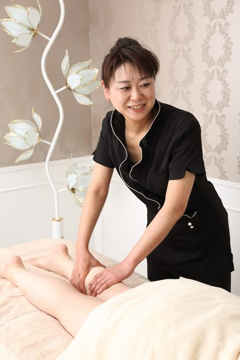

フェイシャルエステ・ブライダルエステが人気の海南市のエステサロン【LOUISE REVER】

 tel.073-482-3765OPEN：10:00～ ※予約制
tel.073-482-3765OPEN：10:00～ ※予約制
Holiday：月曜日・第１第３日曜日

-
スタッフ紹介
Staff
-

店長
後垣内 千穂 （うしろがいと ちほ）スタッフの中では、一番年齢が上ですが、一番体力があると思っています。
ポール・シェリーでの痩身メニューには自信があります。
Louise Rever（ルイーズレヴェ）の魅力について
外観とは違い、一歩店内に入っていただくと、スタッフは気さく感じなのでお肌や、体の悩みだけでなく、色々なお話を聞かせていただけること。
仕事にやりがいを感じること
施術を受けられた、お客様に喜んでいただけた時や、痩身での結果が出たとき。
エステをご検討のお客様へ
まずは一度カウンセリングだけでもお受けください。
お悩みに合わせたメニューのご提案が出来ます。
私のオススメのメニュー
ポール・シェリー グラマラスボディ